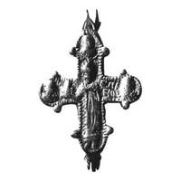
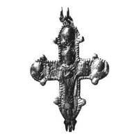

Catalog › CE-0889 · KOR2003-II.3.1.12
Encolpion întreg cu prinț cu model de biserică, reliefuri șterse, bordură dințată, inscripții neobișnuite
sec. XII–XIII (?) (1101–1300) · Pustoșul Bosiha (volostea Gheorghievskaia, ținutul Kineșma), gubernia Kostroma (azi regiunea Ivanovo), Rusia · Muzeul de Stat Ermitaj, Sankt-Petersburg, Secția de arheologie a Europei de Est și Siberiei (OAVEs), inv. 624/944а, б
double-sided reliquary cross (enkolpion), aramă; c. XII–XIII (?) (1101–1300); found at Pustoșul Bosiha (volostea Gheorghievskaia, ținutul Kineșma), gubernia Kostroma (azi regiunea Ivanovo), Rusia; kept at Muzeul de Stat Ermitaj, Sankt-Petersburg, Secția de arheologie a Europei de Est și Siberiei (OAVEs).




Identificare
- Categorie
- Encolpion bivalv (relicvar)
- Material
- Aramă
- Tehnică
- Turnare în relief; Gravare (incizie)
- Stare
- Întreagă
- Dimensiuni
- Î 57 × L 50 × Gr 35 mm
Iconografie
- Avers
- Sf. Boris și Gleb
- Descriere avers
- Compoziție standard, dar inscripții neobișnuite. Reliefuri șterse; ambele valve încadrate cu bordură dințată. Inscripție adâncită la umărul stâng al prințului: ГЛӨ/БӨ.
- Revers
- Sf. Boris și Gleb
- Descriere revers
- Balamaua din dreapta sus ruptă; marginea valvei deteriorată. Inscripție adâncită la umărul drept al prințului: [Б].
- Inscripții
- ГЛӨ/БӨ; [Б]
- Limba
- Slavonă
Datare și atribuire
- Datare
- sec. XII–XIII (?) (1101–1300)
- Centru
- Necunoscut
- Tipologie
- Korzukhina–Peskova 2003, tip II 3 1
Descoperire
- Localitate
- Pustoșul Bosiha (volostea Gheorghievskaia, ținutul Kineșma)
- Regiune
- gubernia Kostroma (azi regiunea Ivanovo)
- Țară
- Rusia
- Context
- Necropolă / mormânt
- Anul
- 1895
Păstrare și referințe
- Colecție
- Muzeul de Stat Ermitaj, Sankt-Petersburg, Secția de arheologie a Europei de Est și Siberiei (OAVEs)
- Nr. inventar
- 624/944а, б
- Bibliografie
- G. F. Korzukhina, A. A. Peskova, Древнерусские энколпионы. Нагрудные кресты-реликварии XI–XIII вв., Sankt-Petersburg, 2003 [Korzukhina–Peskova 2003], p. 89, cat. nr. II 3 1/12, reprodusă la Табл. 41 (planșe, p. 283). Bibliografie citată în sursă: Нефедов 1899, 197, табл. 6, 1а, б; Анучин 1899, 255–256; Grodek-Kciuk 1989, рис. 5; Корзухина, архив ф. 77, д. 15, л. 32.
- Figura
- Табл. 41
- Planșe
- Korzukhina–Peskova 2003, Табл. 41 (planșă fără paginație proprie în PDF; p. 283 tipărită)
- Observații
- Datare după Peskova: sec. XII–XIII (?). Circumstanțe: Săpături de kurgane în pustoșul Bosiha, volostea Gheorghievskaia, ținutul Kineșma, gubernia Kostroma (azi regiunea Ivanovo), kurganul III, F. D. Nefedov, 1895. Grosime 3,5 cm cum e tipărită în sursă (valoare neobișnuită). Foto: R. S. Minasian (Ermitaj). Lectura inscripției de pe față de verificat pe original. Coordonate: nu sunt date în sursă.
Citare: Corpus Encolpiorum, CE-0889, Encolpion întreg cu prinț cu model de biserică, reliefuri șterse, bordură dințată, inscripții neobișnuite, https://vitaliejosanu1979-ux.github.io/primul-meu-proiect/piese/KOR2003-II.3.1.12/ (accesat 2026-10-17).